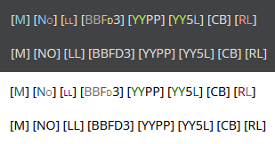

Prefix:
Suffix:
Should generated BBCodes be color coded based on their genes, or just be plaintext? This setting also impacts whether recessive genes are a smaller font size or not.
Should generated BBCodes include a list of a cat's hidden/recessive traits if there are any?
Data Storage Settings:
These settings only apply to cats going forward! You'll have to re-enter previous cats if you want to add to their stored data.
When deciding what data to store, you should weigh how important the data is for you versus how much space it will take up. LocalStorage only has 5mg of space, so some things can cause your village to run out of space quickly. Click on a setting for more explanation and an storage impact estimate.
Should the Not-Cataloguer store your cat's friends/best friends/partners/rivals? This has a varying impact on storage. Cats with many friends will take up more space than cats with few. Overall, it has a moderate to high impact on storage.
Auto Match Friends Names: When entering new cats, try to automatically link IDs to cats in your village with matching names.
Example: Your cat named Cookie has a friend named Shark, and another cat in your village is named Shark - link Shark's ID to Cookie's friends list, and vice versa.
(!) Note that if two cats in your village share a name, this may not function as intended.
(!) Additionally, if your cat is friends with a cat outside of your village, and your village has a cat with the same name, it will link to your cat, not the correct one in the other village.
Should the Not-Cataloguer store your cat's family members? This has a varying impact on storage. Cats with bigger families will take up more space than cats with smaller families. Overall, it has a moderate to high impact on storage.
Auto Match Family Names: When entering new cats, try to automatically link IDs to cats in your village with matching names.
Example: Your cat named Cookie has a child named Shark, and another cat in your village is named Shark - link Shark's ID to Cookie's family list, and vice versa.
(!) Note that if two cats in your village share a name, this may not function as intended.
(!) Additionally, if your cat is family with a cat outside of your village, and your village has a cat with the same name, it will link to your cat, not the correct one in the other village.
Should the Not-Cataloguer store your cat's pose? If poses are not stored, all cat previews will default to Standing. If poses are stored, cat previews will use the stored pose when generating cat previews. It has a very small impact on storage.
Should the Not-Cataloguer store your cat's eye settings? (neutral, UwU, wimdy, etc) If eyes are not stored, all cat previews will default to neutral. If eyes are stored, cat previews will use the stored eyes when generating cat previews. It has a very small impact on storage.
Should the Not-Cataloguer store your cat's size/weight? Size only shows up on cat pages. It does have some use cases, such as (thus far unimplemented) size checks for Growth genes, and a check to see if the cat is the minimum or maximum size for the Sales Post Generator. It has a small impact on storage.
Should the Not-Cataloguer store your cat's worn clothes? As of now, clothes previews are not implemented in the Not-Cataloguer, so clothes will not appear on cat previews, and will only be stored as a text list on cat pages. Clothes will eventually be implemented in cat previews, so having the data there will allow for compatibility later. It has a small to moderate impact on storage.
Should the Not-Cataloguer store your cat's job levels? This allows the Not-Cataloguer to better prioritize job affinities with level bonuses in mind. It has a small to moderate impact on storage.
Store Jobs EXP: Should the Not-Cataloguer also store current EXP values for each job? This can be used to track how many days are needed to level up a job. This adds a small to moderate impact on storage.
Should the Not-Cataloguer store your cat's adventuring class levels?
Store Jobs EXP: Should the Not-Cataloguer also store current EXP values for each adventuring class? This can be used to track how close a cat is to leveling up in an adventuring class. This adds a small to moderate impact on storage.
Should the Not-Cataloguer store your cat's held trinket data? This has a small impact on storage.
Should the Not-Cataloguer store your cat's biography? With standard copy/paste input, this will not include images, including catmojis which will be converted to their alt text, and most text formatting. This has a varied impact on storage, but generally speaking, it has a huge potential impact on storage due to the large size biographys can take up.
Should the Not-Cataloguer check your cat's biography for a gene string to override the automatically generated gene string? This is helpful if you have already gened your cats without the Not-Cataloguer, and have their genes in their biography, and want those genes also saved in the Not-Cataloguer for searching purposes. Note: it checks the biography BEFORE deleting the biography if you have store biography disabled, so feel free to leave that toggled off, it will still check for the gene string and then discard the biography! If you already have entered this cat before, and have "Overwrite Existing Gene String" disabled, the Not-Cataloguer's stored gene string will take priority over the description gene string. Another note: if your cat has had its genes revealed, but you also put a gene string in its biography, the biography gene string will take precedence, even if it is an incorrect match to the revealed gene string. For this reason, if you have this setting enabled, you should make sure that the first gene string present in your biography is the correct gene string. In the biography scan for a gene code, the Not-Cataloguer recognizes two formats, "[C] [NS] [LL] [BBFD4] [YYMP] [YN2P] [??] [RR]" and "[ C ] [ NS ] [ LL ] [ BBFD4 ] [ YYMP ] [ YN2P ] [ ?? ] [ RR ]". If your gene string pastes are not formatted in these formats of spacing and brackets, it will not recognize them.
When re-entering a cat that already exists in your village, should the gene string overwrite the existing gene string? By default, all data is overriden when you input a cat again, but if you gened your cat already and are just trying to update other information like jobs progress, and don't want to lose your modified gene string, you can toggle this setting off.